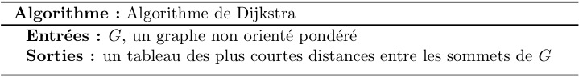

Algorithme de Dijsktra
Contexte
Mettons-nous dans la place d'un livreur Super-eats qui se déplace en vélo. Il se situe actuellement aux abords d'un restaurant, situé au point \(D\) , et doit livrer une commande à un client situé au point \(G\).

En tant que cycliste, le livreur se déplace uniquement sur les pistes cyclables. La carte suivante indique les pistes permettant de relier le point d'arrivée, ainsi que les temps pour atteindre les points intermédiaires.

Quel est le le plus court chemin que doit emprunter le livreur pour effectuer sa livraison ?
Modélisation
Les données du problème du livreur peuvent être modélisées sous la forme d'un graphe pondéré où :
- chaque sommet est un point d'intersection d'une piste cyclable,
- chaque arête, une piste cyclable,
- le poids de chaque arête, la durée en minutes pour parcourir la distance entre 2 sommets.
Soit \(C(x,y)\) un chemin (ou une chaîne) dans un graphe pondéré du sommet \(x\) vers le sommet \(y\). La longueur de ce chemin est égale à la somme des poids de chacun arcs (ou de chacune des arêtes) qui le constituent. Exemple : La chaine \(D-B-C-F\) a une longueur de \(13 + 8 + 9 = 30\).
Le problème du livreur Super-Eats est de déterminer la plus courte chaîne du graphe pondéré entre le sommet \(D\) et un sommet \(G\). Pour résoudre ce problème, une solution est d'appliquer l'algorithme de Dijkstra, créé en 1959.
Principe

L'algorithme dû à Dijkstra est basé sur le principe suivant :
Si le plus court chemin reliant le sommet de départ \(s_0\) à un autre sommet \(s_f\) passe par les sommets \(s_1, s_2, \dots, s_k\) alors, les différentes étapes sont aussi les plus courts chemins reliant \(s_0\) aux différents sommets \(s_1, s_2, \dots, s_k\).
On construit de proche en proche le chemin cherché en choisissant à chaque itération de l'algorithme, un sommet \(s_i\) du graphe parmi ceux qui n'ont pas encore été traités, tel que la longueur connue provisoirement du plus court chemin allant de \(s_0\) à \(s_i\) soit la plus courte possible.
L'algorithme construit un tableau de \(n\) éléments (où \(n\) est le nombre de sommets de \(G\)) qui va contenir pour chaque case \(i\) le coût du sommet (i.e la distance minimale du sommet de départ au sommet \(s_i\)) ainsi que le prédécesseur du sommet \(s_i\).
Initialisation
Au départ :
- Chaque case \(i\) est initialisée à \(+\infty\), le prédécesseur à \(\emptyset\)
- Le coût du sommet de départ \(s_0\) est initialisée à 0
- L'ensemble des sommets \(s_i\) sont marqués non visités
Déroulé
A chaque étape,
- On choisit le sommet \(s\), non visité, de coût minimal,
- On met à jour les coûts des voisins de \(s\) en ajoutant le coût de \(s\) au poids des arêtes s'il est inférieur au coût actuel,
- On marque \(s\) comme prédécesseur de chaque sommet dont le coût a été mis à jour,
- On marque \(s\) comme sommet visité.
Exemple sur le graphe de la Figure 1
Etape 1
- on choisit le sommet \(D\), non visité car il a le coût minimal parmi l'ensemble des sommets non visités,
- on met à jour les coûts des voisins de \(D\) en ajoutant le coût de \(D\) au poids des arêtes de \(A\) et \(B\)
- on marque \(D\) comme prédécesseur de \(A\) et \(B\) car leurs coûts ont été mis à jour
- on marque \(D\) comme sommet visité
Etape 2
- on choisit le sommet \(B\), non visité car il a le coût minimal parmi l'ensemble des sommets non visités,
- on met à jour les coûts des voisins de \(B\) en ajoutant le coût de \(B\) au poids des arêtes de \(C\) et \(E\)
- on marque \(B\) comme prédécesseur de \(C\) et \(E\) car leurs coûts ont été mis à jour
- on marque \(B\) comme sommet visité
Etape 3
- on choisit le sommet \(A\), non visité car il a le coût minimal parmi l'ensemble des sommets non visités,
- on met à jour les coûts des voisins de \(A\) en ajoutant le coût de \(A\) au poids des arêtes de \(F\)
- on marque \(A\) comme prédécesseur de \(F\) car son coût a été mis à jour
- on marque \(A\) comme sommet visité
Etape 4
- on choisit le sommet \(C\), non visité car il a le coût minimal parmi l'ensemble des sommets non visités,
- on met à jour les coûts des voisins de \(C\) en ajoutant le coût de \(C\) au poids des arêtes de \(E\)
- on marque \(C\) comme prédécesseur de \(E\) car son coût a été mis à jour
- on marque \(C\) comme sommet visité
Etape 5
- on choisit le sommet \(E\), non visité car il a le coût minimal parmi l'ensemble des sommets non visités,
- on met à jour les coûts des voisins de \(E\) en ajoutant le coût de \(E\) au poids des arêtes de \(G\)
- on marque \(E\) comme prédécesseur de \(G\) car son coût a été mis à jour
- on marque \(E\) comme sommet visité
Etape 6
- on choisit le sommet \(F\), non visité car il a le coût minimal parmi l'ensemble des sommets non visités,
- on ne met à jour aucun coût des voisins de \(F\)
- on marque \(F\) comme sommet visité
Etape 7
- on choisit le sommet \(G\), non visité car il a le coût minimal parmi l'ensemble des sommets non visités,
- on ne met à jour aucun coût des voisins de \(G\)
- on marque \(G\) comme sommet visité
Fin de l'algorithme
L'algorithme de Dijsktra renvoie le tableau des coûts des distances entre le sommet de départ et le sommet \(i\).
Le coût de la chaine la plus courte entre le sommet de départ et le sommet \(i\) est la valeur du coût du sommet \(i\)
Exemple sur la Figure 1 : le coût de la chaine la plus courte entre \(D\) et \(G\) est égale à 29 (coût de \(G\) dans le tableau des coûts)
La chaine entre le sommet de départ et le sommet \(i\) est la liste inversée des prédécesseurs successifs du tableau des coûts en partant du sommet \(i\).
Exemple sur la Figure 1 : La liste des prédécesseurs successifs en partant de \(G\) est : \(E \rightarrow C \rightarrow B \rightarrow D\)
La chaine la plus courte entre \(D\) et \(G\) est la liste inversée : \(D \rightarrow B \rightarrow C \rightarrow E \rightarrow G\)
Exercices
- Appliquer l'algorithme de Dijkstra tel que décrit précédemment pour obtenir le tableau de coûts tel que le sommet de départ est le sommet \(G\). En déduire la chaine la plus courte entre les sommets \(G\) et \(A\),
- Écrire l'algorithme
obtenir_chainequi prend en paramètre un tableau \(T\) de coûts de distance, un sommet \(x\) de départ et un sommet d'arrivée \(y\) et renvoie la chaine la plus courte entre \(x\) et \(y\) sous la forme d'une liste de sommets, - Écrire l'algorithme
initialisation, tel que décrit précédemment, qui prend en paramètre un graphe \(G\) et qui renvoie un tableau de coût initialisé, - Écrire l'algorithme
mettre_a_jour_voisinsqui prend en paramètre un graphe \(G\), un tableau de coût \(T\) et un sommet \(s\) et a pour effet de bord de mettre à jour les voisins de \(s\) tel que décrit précédemment, - Écrire l'algorithme
dijkstra, tel que décrit précédemment, qui prend en paramètre un graphe \(G\) et un sommet \(s\) de départ et renvoie le tableau des coûts de distance.
Solutions
- Le chemin le plus court entre \(G\) et \(A\) est : \(G \rightarrow E \rightarrow C \rightarrow A\) et vaut 18. Les états successifs du tableau des coûts sont :
1 2 3 4 5 6 7 8 9 10 11 12 13 14 15 16
Algorithme obtenir_chaine(T, x, y) Entrées : - T : un tableau de coûts de distance - x : le sommet de départ - y : le sommet d'arrivée Sortie : la chaine la plus courte entre x et y sous la forme d'une liste de sommets Début chaine <- [] s = y Tant que s != x faire chaine <- [s] + chaine s <- T[s].predecesseur FinTantQue chaine <- [x] + chaine Renvoyer chaine Fin1 2 3 4 5 6 7 8 9 10 11 12 13 14
Algorithme initialisation(G, x) Entrées : - G, un graphe pondéré - x, le sommet de départ Sortie : un tableau de coût initialisé Début T <- [|G.sommets|] # un tableau de taille égale à l'ordre de G Pour tout sommet s de G.sommets faire T[s].cout = +∞ T[s].predecesseur = Ø FinPour T[x].cout = 0 Renvoyer T Fin-
1 2 3 4 5 6 7 8 9 10 11 12 13 14
Algorithme mettre_a_jour_voisins(G, T, s) Entrées : - G, un graphe pondéré - T, un tableau de coût - s, un sommet Sortie : Aucune Effet de bord : Les coûts des voisins de s sont mis à jour Début Pour tout voisin v de G.voisins(s) Si T[s] + G.poids(s, v) < T[v] alors T[v] = T[s] + G.poids(s, v) Finsi FinPour Fin -
1 2 3 4 5 6 7 8 9 10 11 12 13 14 15
Algorithme dijkstra(G, s) Entrées : - G : un graphe pondéré - s : un sommet de G Sortie : le tableau des coûts des distances entre s et les sommets de G Début T <- initialisation(G, s) non_visite <- G.sommets Tant que non_visite est non vide faire noeud <- choisir_min(T) non_visite <- non_visite - noeud mettre_a_jour_voisins(G, T, noeud) FinTantQue Renvoyer T Fin
Analyse de l'algorithme de Dijkstra
Terminaison
L'algorithme dijkstra termine si la boucle Tant que principale termine.
Le variant de boucle est la taille de l'ensemble des sommets non visités.
Soit \(v_i\), la taille de l'ensemble des sommets non visités à l'itération \(i\) de la boucle Tant que, \(v\) décrit une suite entière, positive et strictement décroissante qui se définie par :
Par définition, une suite strictement décroissante d’entiers naturels est toujours finie (il n’y a pas de suite infinie strictement décroissante).
Ainsi, la boucle Tant que se termine et l'algorithme dijkstra également.
Correction
Pour la preuve, on va procéder par récurrence avec l'invariant suivante : “Tous les sommets ayant été visités sont tels que leurs distances au sommet initial ont été calculées et enregistrées, et les sommets restants s’il en est sont à des distances toutes plus grandes”.
Complexité
Soient :
- \(n\), le nombre de sommets du graphe \(G\)
- \(m\), le nombre d'arêtes du graphe G
Soit \(C_{dijkstra}\) la complexité de l'algorithme de Dijkstra
Cas d'un graphe pondéré avec poids négatif
Les données du problème du livreur évoluent.
Au lieu de considérer la distance, on considère le dénivelé des pistes cyclables.
Ci-dessous, le graphe non orienté pondéré où le poids des arêtes correspond au dénivelé des pistes cyclables.
Quel est le chemin présentant le moins de dénivelé, que doit emprunter le livreur pour effectuer sa livraison ?
Ressources
[1] Utiliser l'algorithme de Dijkstra, Yvan Monka, Youtube, 25/12/2014
[2] Éditeur en ligne de graphe et exécution de l'algorithme de Dijsktra
Pour aller plus loin
- Algorithme de recherche de plus court chemin de Bellman-Ford (Gère les graphes pondérés de poids négatifs)
- Algorithme de recherche de plus court chemin A* (Amélioration de Dijkstra lors de la sélection du prochain noeud à visiter)